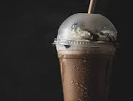

Cold coffee is a chilled, refreshing beverage made by blending milk, coffee, sugar, and ice until smooth and frothy. It is often enhanced with chocolate syrup or a scoop of ice cream for extra richness and flavor. Served cold, it is a popular drink, especially in warm weather, offering a perfect balance of sweetness and coffee flavor with a creamy, smooth texture.
Cold coffee is prepared by adding chilled milk, instant coffee powder, sugar, and ice cubes into a blender. These ingredients are blended together until the mixture becomes smooth, creamy, and frothy. For a richer taste, chocolate syrup or a scoop of ice cream can also be added before blending.
Once blended, the cold coffee is poured into a tall glass and can be topped with whipped cream or a drizzle of chocolate syrup for extra flavor. It is served immediately while cold, making it a refreshing and energizing drink, especially in hot weather.